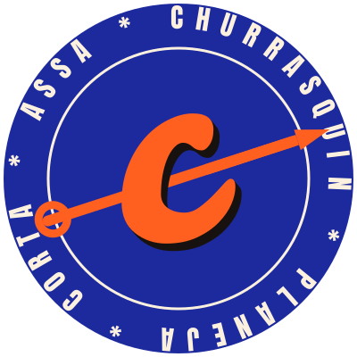

Carnova e Quintal da Carne, peça por peça
Antes de desenhar qualquer coisa: o que cada referência faz, e o que o churrasquin vai fazer igual. Marque o que concorda e corrija o resto. As duas peças que você já escolheu ficam fixas.


Antes de desenhar qualquer coisa: o que cada referência faz, e o que o churrasquin vai fazer igual. Marque o que concorda e corrija o resto. As duas peças que você já escolheu ficam fixas.

| Elemento | Carnova | Quintal da Carne | churrasquin vai fazer |
|---|---|---|---|
| Logo principal | Emblema em faixa curva, com a borda de baixo ondulada, construída sobre três círculos. Nome em sans arredondada, "made in" embaixo e um boizinho no pé. | Empilhado e centralizado: "QUINTAL" em arco, "DA" pequeno, "CARNE" grande em letra de letreiro com sombra deslocada, frase embaixo. | Wordmark na fonte da direção 3, com uma versão principal em emblema (faixa curva no espírito Carnova) e uma versão empilhada com frase "pra quem toca a brasa" (espírito Quintal). aprovar |
| Família de assinaturas | Poucas: emblema + nome solto. | Muitas, todas do mesmo DNA: selo circular com monograma, losango, script "Quintal da Carne", "ESTD 2020", placa retangular, "Assado de tira". | Seguir o Quintal: selo circular (já é o da direção 2), losango com a frase, script curto secundário, placa retangular com cortes ("picanha · fraldinha · vazio"), "desde 2026". aprovar |
| Tipografia | Duas: sans arredondada robusta (Rubik) para tudo + pincel seco agressivo (Buchery) para frases de impacto. | Letreiro com serifa decorativa e sombra para o nome, script monoline para a assinatura, sans larga em caixa alta espaçada para frases. | Fonte da direção 3 no logo; uma sans de apoio para textos; uma fonte expressiva para frases (pincel seco, como Carnova). Sem misturar mais que três. escolher: pincel ou script |
| Cores | Bordô dominante, bege, ocre, marrom, grafite e verde musgo. Bordô cobre metade das peças. | Três quentes e foscas: vermelho tijolo, mostarda e verde garrafa, sobre papel creme. | Manter cobalto e laranja-brasa da direção 2 como dominantes, sobre papel creme; avaliar uma terceira cor terrosa (mostarda ou kraft) para trazer o calor das duas referências. decidir a 3ª cor |
| Ilustração | Gravura em ponta-seca de cabeça de boi, enorme, em tom sobre tom no fundo. Bezerros e boi inteiro em sacola e cartaz. | Desenho de linha à mão com humor: cachorro roubando linguiça, a casa, uma peça de carne; traço tremido, cor única. | As duas linguagens: gravura grande do boi (fundo, sacola) e 2–3 desenhos de linha com humor brasileiro (cachorro de olho na grelha, tio virando a carne). Limite honesto: em código chega no espírito, não no traço de um ilustrador. aprovar o limite |
| Textura | Respingos de sangue nas pranchas de tipografia; gravura dá a textura. | Impressão em papel, falha de tinta, papel manteiga, kraft, parede pintada. | Papel creme com grão, falha de carimbo nas assinaturas, kraft nas embalagens. Sem respingo de sangue (o app ensina, não é açougue). aprovar |
| Estampa | Logo repetido em papel kraft de embrulho. | Losango repetido em papel manteiga. | Selo e losango repetidos em papel, fita e avental; a estampa de espetinho da direção 2 como segunda opção. |
| Fotografia | Boi no pasto, açougueiro, cortes crus, gente usando a marca. | Carne na grelha, o pintor de letreiro trabalhando, a fachada. | Brasa, mãos, turma no quintal e carne na grelha (fotos reais com crédito até haver ensaio próprio). |
| Aplicações | Avental, sacola, caixa, papel de embrulho, cavalete de calçada, outdoor, camiseta, uniforme. | Cardápio, porta-copos, papel, fachada, parede pintada à mão. | Avental, porta-copos, guia de cortes impresso (como cardápio), sacola kraft, adesivos, camiseta, parede pintada, e o app no celular. |
| Apresentação | Abre com foto e emblema; construção, cores, tipografia em blocos; depois aplicações em foto. | Abre com papel e foto; prancha de assinaturas; aplicações; bastidores do letreiro pintado. | Mesma ordem: capa com foto, prancha de assinaturas, construção, cores, tipografia, ilustração, aplicações, app. Pouco texto. |
Análise feita a partir das imagens públicas dos projetos no Behance. Nenhum elemento deles será copiado: a lista diz o tipo de recurso, não a forma.